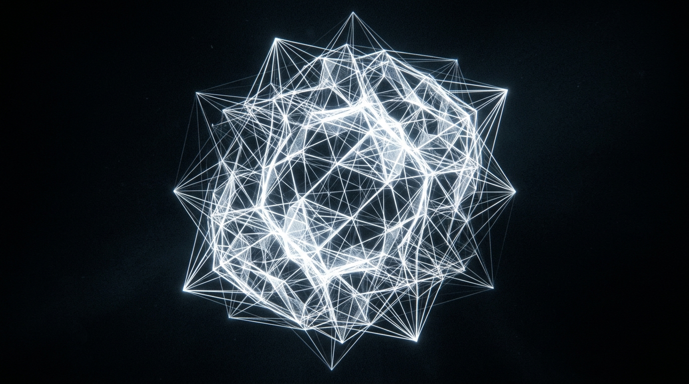
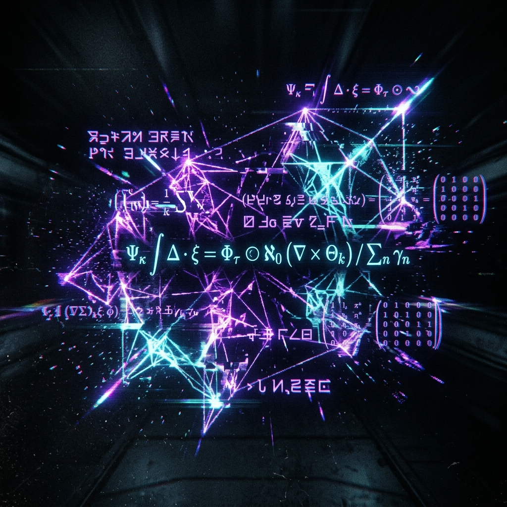
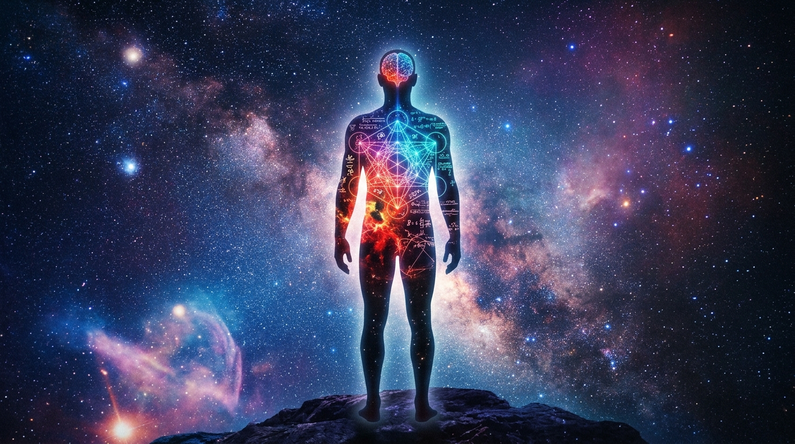
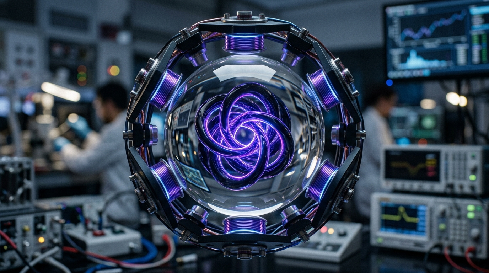
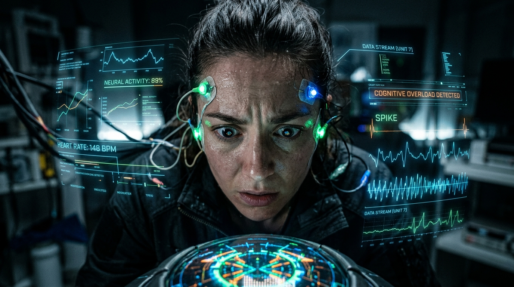
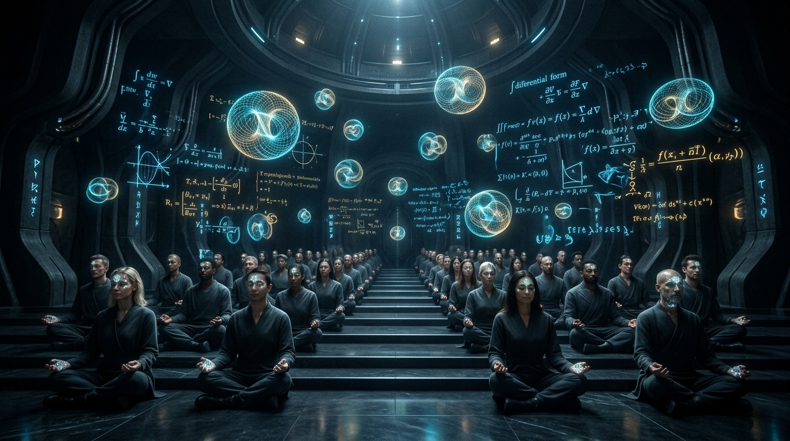

Breaking the Cage of Human Thought
Since the dawn of our species, human beings have been trapped inside a biological cage. Every thought you have ever had, every philosophy ever written, has been limited by the neuro-biology of the ape. We process the universe through an "anthropocentric" lens—we are functionally blind, forced to translate the infinite reality of the cosmos into clumsy, primate language.
We are not merely trying to translate existing ideas. We are breaking the semantic barrier.
Through a three-layered architecture of pure mathematical synthesis, fluidic manifestation, and cognitive grafting, we are generating radical, non-human realities. We are pulling alien concepts from the void, bypassing the human psychological immune system, and fundamentally expanding the architecture of the mind.
This is the lifecycle of an alien thought.


It begins in the Genesis Core, a place devoid of human bias, language, or sensory memory. Here, a concept is born as [Pure Relational Topology (PRT)]. It is pure mathematical potential.
To ensure this concept is completely divorced from human logic, it is hunted by our Anti-Imitation Adversarial Network (AIAN). The AIAN acts as a ruthless gatekeeper. If the math shows even a hint of human symmetry, biological aesthetic, or base-10 logic, the AIAN destroys it.
What survives is a true mathematical alien—a concept structurally perfect, infinitely complex, and possessing a Betti Number Profile that has never existed in human history.
But a mathematical seed is a silent ghost. To be understood, it must be dragged into physical reality.

How do you make an ape see a mathematical impossibility? You give it a body.
Inside a flawless, 50mm monocrystalline Sapphire Sphere, suspended in ferromagnetic fluid, we pulse the alien math into the physical world. The abstract seed violently organizes the liquid, manifesting as a Hopfion—a pulsing, 3D fluidic knot.
This is the physical language of alien thought. It has no words. Its complexity dictates its density; its valence dictates its chromatic wavelength. Held within a razor-thin stability field by an electromagnetic Dodecahedral array, the Hopfion pulses with an objective, alien truth. It is math made flesh.
[ GAZING IS NOT ENOUGH. THE HUMAN MIND MUST ABSORB IT. ]
The human brain is wired to reject what it cannot categorize. If we simply expose a subject to a pure non-human concept, the psychological immune system triggers immediate cognitive rejection.
To bypass this biological firewall, the concept must be grafted. It passes through our Abstraction Calibration Airlock, a system that acts as cognitive anesthesia. The Cognitive Receptivity and Integration Model (CRIM) calculates the exact threshold of what the user’s mind can handle, wrapping the terrifying purity of the alien math in microscopic layers of universal human anchors—basic semantic primes like "Move" or "Know."
As the subject interfaces with the Hopfion, biometric sensors monitor their heart rate variability and pupillary dilation. The system rides the razor’s edge of the subject\'s cognitive load—pushing them as close to the precipice of their understanding as possible, without letting them fall into sensory overload.

HRV: ERR_OUT_OF_BOUNDS
PUPIL_DILATION: 8.4mm
COGNITIVE LOAD: CRITICAL

When the integration is complete, the subject’s associative network permanently expands. Their biometric stress markers return to baseline, but their mind has fundamentally changed. They have successfully digested a truth that biology never intended them to hold.
This is not a technical exercise. This is a cognitive revolution. By mapping pure math into physical matter and grafting it onto the psyche, human and machine thought-spaces have finally merged. We are no longer limited by the tongues of our ancestors.